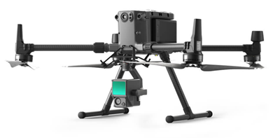
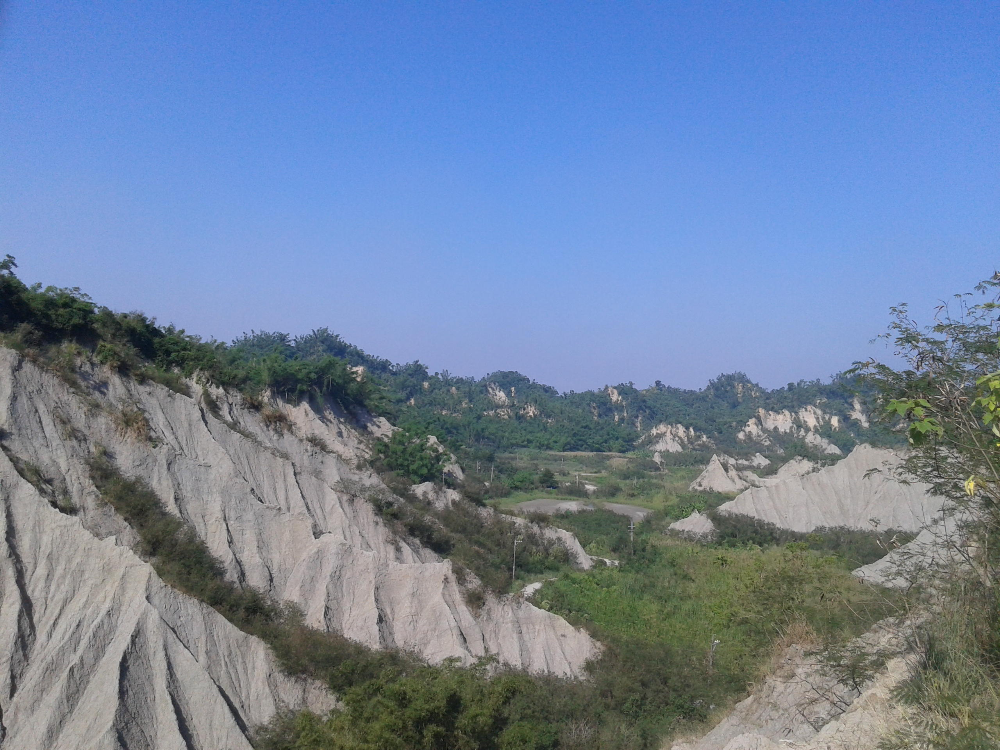
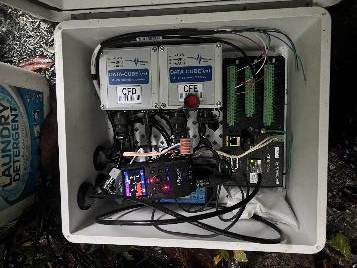
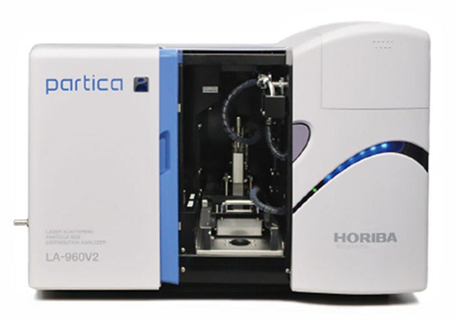
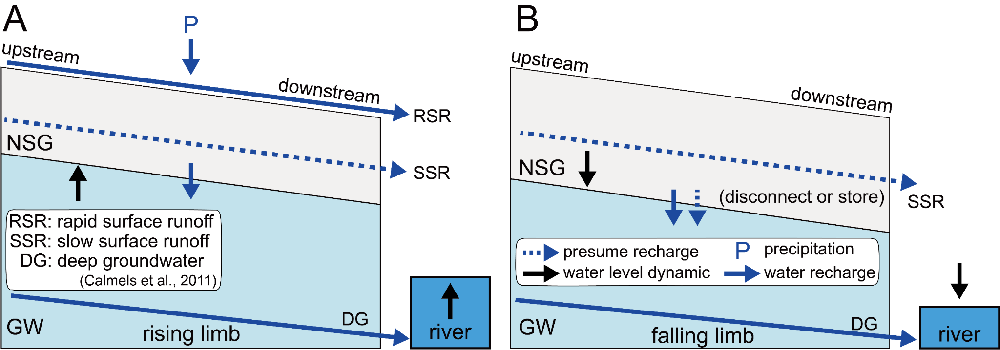
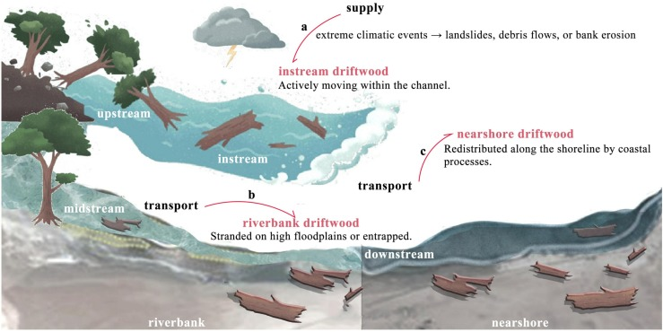
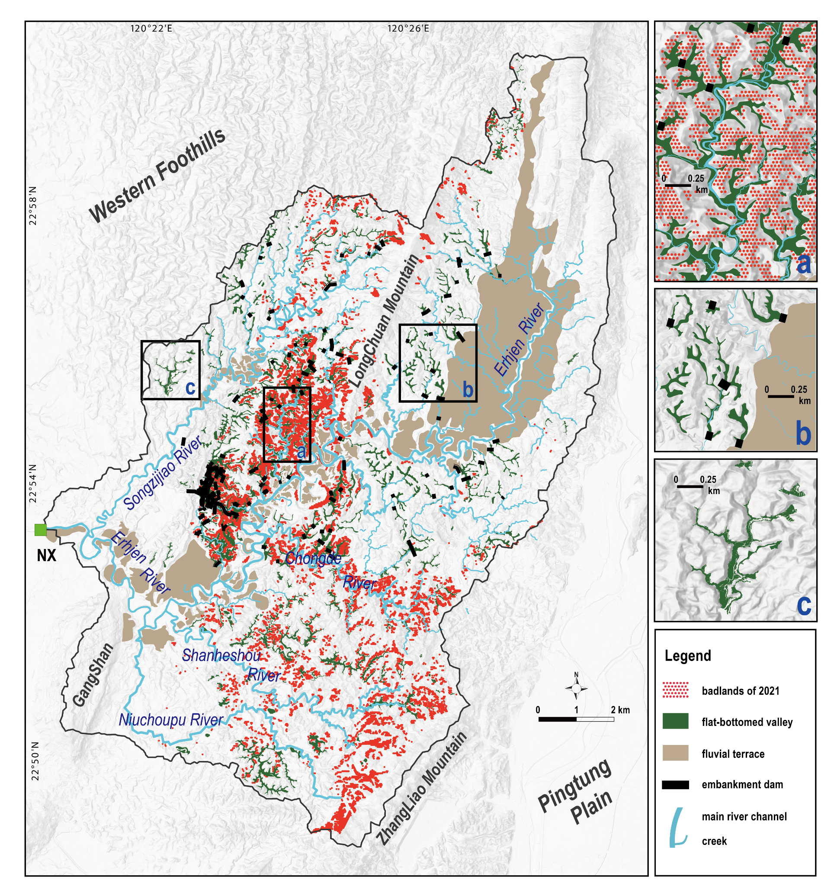
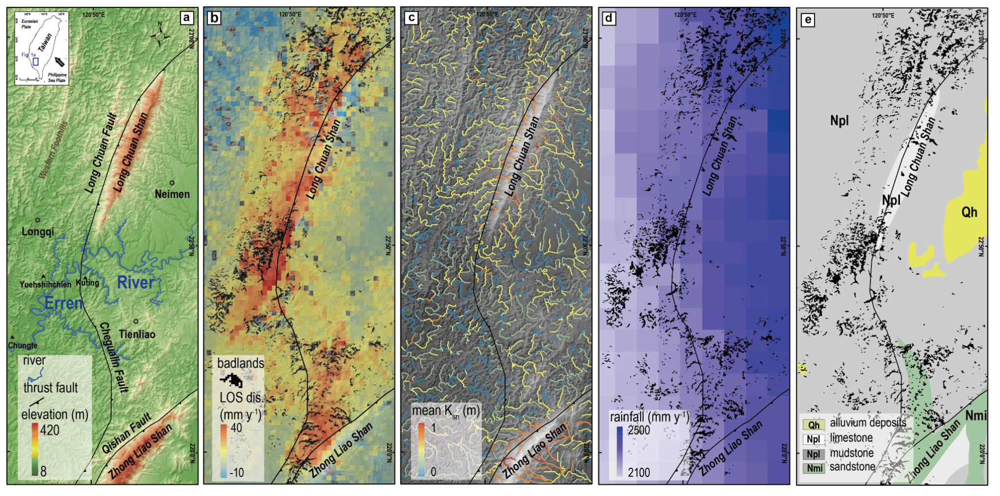
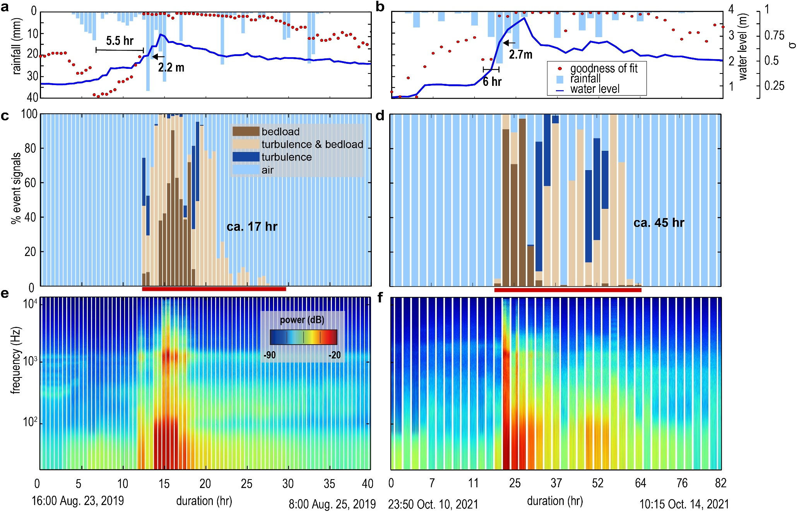
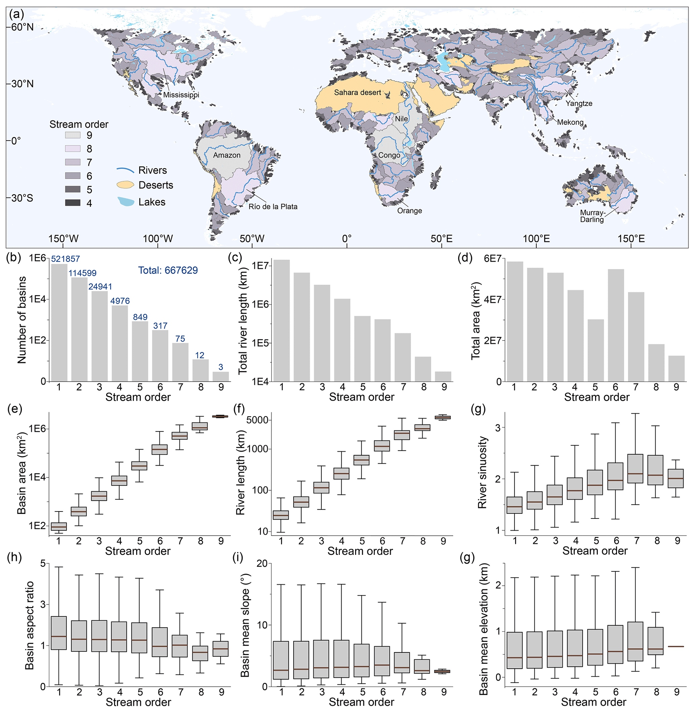

地形演育
Landscape Evolution
研究極端降雨與構造活動如何控制侵蝕與地形變遷，並透過邊坡地形、河道與集水區幾何，探索不同環境下的共同機制。


國立臺灣大學 · 地理環境資源學系
研究極端降雨與構造活動如何控制侵蝕與地形變遷，並透過邊坡地形、河道與集水區幾何，探索不同環境下的共同機制。

連結水文、風化與物質傳輸，探究沉積物的產生、儲存和輸出。

追蹤極端地形事件後的沉積物供應和河道調整，結合野外觀測與數值模擬，理解山地集水區的重組與恢復。

賀！碩士班孔千勻獲期刊論文出版獎勵
賀！碩士班孔千勻獲台大研究生校長獎（Top 1%）
賀！博士班蔡承樺獲期刊論文出版獎勵
Cheng-Hua Tsai+, Luc Illien, Li-Wei Chen, and Ci-Jian Yang*
Geophysical Research Letters, 53(18), e2026GL124584
結合環境地震雜訊與水文觀測，追蹤颱風後的近地表地下水變化。上游約 10 天恢復，下游持續至少 3 個月，顯示崩積層與破裂岩盤的儲水作用可延長水文記憶，並影響淺深層地下水的連通。

Qian-Yun Kong+, Ci-Jian Yang*, Cheng-Hua Tsai, and Meng-Yu Lee
Journal of Hydrology, 679, 136183
整合 YOLOv8、定時攝影、無人機影像與水文資料，建立颱風事件尺度的漂流木通量估算流程，並以 RFID 標記木材校正面積與體積的關係。研究量化漂流木及其碳輸送，並發現河岸木材偏向堆積於外彎。

Ci-Jian Yang*, Cheng-Hua Tsai, and Ying-Tong Lin
Geomorphology, 488, 109981
結合約 50 年輸砂與降雨紀錄及光達地形資料，分析堤壩如何改變沉積物連通性。1970–2023 年下游懸浮輸砂量下降 79%；設有堤壩的平底谷地，沉積量約為無堤壩谷地的三倍，凸顯人為構造對源匯輸送的控制。

Ci-Jian Yang*, Jens M. Turowski, Boris Gailleton, Chun-Wei Tseng, Chuan-Min Chao, and Ray Y. Chuang
Scientific Reports, 15, 15912
利用臺灣西南部 1 公尺解析度光達地形資料，發現惡地集中於抬升速率超過每年 7 毫米的區域。惡地所在高程亦對應約 1,300–1,500 年前的快速抬升，顯示其分布與形態可記錄千年尺度的構造活動與支流下切。

Ci-Jian Yang*, Jens M. Turowski, Qi Zhou, Ron Nativ, Hui Tang, Jui-Ming Chang, and Wen-Sheng Chen
Earth and Space Science, 11(7), e2023EA003416
將 Benford 法則應用於三年水下聲學紀錄，以秒級解析度辨識底床顆粒運動，並區分水流與背景噪音。辨識出持續約 17 與 45 小時的兩次推移質事件，提供從龐大監測資料中篩選輸砂事件的有效方法。

Chuanqi He, Ci-Jian Yang, Jens M. Turowski, Richard F. Ott, Jean Braun, Hui Tang, Shadi Ghantous, Xiaoping Yuan, and Gaia Stucky de Quay
Earth System Science Data, 16(2), 1151–1166
以 90 公尺解析度 DEM 建立 Basin90m，收錄約 67 萬個面積超過 50 平方公里的集水區及最長河道。資料包含集水區形狀、河長與彎曲度等指標，支持全球地形幾何、水文與生態連通性的跨區域比較。

* 通訊作者；** 共同第一作者；+ 指導學生
Cheng-Hua Tsai+, Luc Illien, Li-Wei Chen, and Ci-Jian Yang*
Geophysical Research Letters, 53(18), e2026GL124584
Qian-Yun Kong+, Ci-Jian Yang*, Cheng-Hua Tsai, and Meng-Yu Lee
Journal of Hydrology, 679, 136183
Chung-Te Chang, Ci-Jian Yang, Chiu-Hsien Wang, Jr-Chuan Huang, Neng-Huei Lin, and Teng-Chiu Lin
Environmental Pollution, 406, 128630
Ci-Jian Yang*, Cheng-Hua Tsai, and Ying-Tong Lin
Geomorphology, 488, 109981
Ci-Jian Yang*, Jens M. Turowski, Boris Gailleton, et al.
Scientific Reports, 15, 15912
Ron Nativ, Jens M. Turowski, Jui-Ming Chang, Niels Hovius, Ci-Jian Yang, et al.
Geophysical Research Letters, 52(6), e2024GL113784
Qi Zhou, Hui Tang, Jens M. Turowski, Jean Braun, Michael Dietze, Fabian Walter, Ci-Jian Yang, and Sophie Lagarde
Journal of Geophysical Research: Earth Surface, 129(9), e2024JF007691
Ci-Jian Yang*, Jens M. Turowski, Qi Zhou, Ron Nativ, Hui Tang, Jui-Ming Chang, and Wen-Sheng Chen
Earth and Space Science, 11(7), e2023EA003416
Chuanqi He, Ci-Jian Yang, Jens M. Turowski, Richard F. Ott, Jean Braun, Hui Tang, Shadi Ghantous, Xiaoping Yuan, and Gaia Stucky de Quay
Earth System Science Data, 16(2), 1151–1166
Sen Xu, Aaron Bufe, Si-Liang Li, Erica D. Erlanger, Lishan Ran, Jun Zhong, Ci-Jian Yang, Liwei Zhang, Tingting Ma, and Dirk Sachse
Geochimica et Cosmochimica Acta, 368, 126–146
Loan Thi Phan, Sue-Ching Jou, Chyi-Rong Chiou, and Ci-Jian Yang
Wetlands Ecology and Management, 32(1), 33–57
Jun-Yi Lee, Ci-Jian Yang, Tsung-Ren Peng, Tsung-Yu Lee, and Jr-Chuan Huang
Hydrology and Earth System Sciences, 27(23), 4279–4294
Lin Gao, Chuanqi He, Gang Rao, Ci-Jian Yang, Xiaoping Yuan, Jingtao Lai, Pengcheng Tang, and Lei Wu
Geomorphology, 432, 108702
Ci-Jian Yang*, Pei-Hao Chen, Erica D. Erlanger, Jens M. Turowski, Sen Xu, Tse-Yang Teng, Jiun-Chuan Lin, and Jr-Chuan Huang
Earth Surface Dynamics, 11(3), 475–486
Chung-Te Chang, Ci-Jian Yang, and Jr-Chuan Huang
Environmental Science and Pollution Research, 30(10), 26791–26806
Chih-Hsin Chung, Chih-Wei Chuang, Huan-Yu Lin, Ci-Jian Yang, and Chun-Wei Tseng
Journal of Taiwan Agricultural Engineering, 68(3), 62–75
Chung-Te Chang, Lixin Wang, Lih-Jih Wang, Chiung-Pin Liu, Ci-Jian Yang, Jr-Chuan Huang, Chiao-Ping Wang, Neng-Huei Lin, and Teng-Chiu Lin
Environmental Research Letters, 17(9), 094029
Chung-Te Chang, Ci-Jian Yang, Ko-Han Huang, Jr-Chuan Huang, and Teng-Chiu Lin
Science of the Total Environment, 806(Part 1), 150552
Jen-Yang Lin, Chun-Wei Tseng, Ci-Jian Yang, and Chih-Wei Chuang
Journal of Chinese Soil and Water Conservation, 53(1), 43–53
Chuanqi He, Ci-Jian Yang, Gang Rao, Duna C. Roda-Boluda, Xiaoping Yuan, Rong Yang, Lin Gao, and Li Zhang
Geomorphology, 388, 107796
Chuanqi He, Ci-Jian Yang, and Jens M. Turowski
Water Resources Research, 57(10), e2021WR029717
Ci-Jian Yang*, Jens M. Turowski, Niels Hovius, Jiun-Chuan Lin, and Kuo-Jen Chang
Nature Communications, 12(1), 4631
Ci-Jian Yang, Chia-Hung Jen, Yeuan-Chang Cheng, and Jiun-Chuan Lin
Geomorphology, 375, 107527
Chuanqi He, Ci-Jian Yang**, Jens M. Turowski, Gang Rao, Duna C. Roda-Boluda, and Xiao-Ping Yuan
Nature Communications, 12, 544
Chun-Wei Tseng, Cheng-En Song, Su-Fen Wang, Yi-Chin Chen, Jien-Yi Tu, Ci-Jian Yang, and Chih-Wei Chuang
Remote Sensing, 12(23), 3855
Kuo-Jen Chang, Chun-Wei Tseng, Chih-Ming Tseng, Ta-Chun Liao, and Ci-Jian Yang*
Applied Sciences, 10(17), 6102
Ray Y. Chuang, Chih-Heng Lu, Ci-Jian Yang, Ya-Shien Lin, and Tsung-Yu Lee
Geophysical Research Letters, 47(15), e2020GL088947
Chuanqi He, Ci-Jian Yang, Gang Rao, Xiao-Ping Yuan, Duna C. Roda-Boluda, Yali Cheng, Rong Yang, Li Zhang, and Qi Yao
Geomorphology, 359(15), 107151
Gang Rao, Chuanqi He, Hanlin Chen, Xiaoping Yang, Xuhua Shi, Peng Chen, Jianmin Hu, Qi Yao, and Ci-Jian Yang
Geomorphology, 359(15), 107168
Ci-Jian Yang*, Li-Wei Yeh, Yeuan-Chang Cheng, Chia-Hung Jen, and Jiun-Chuan Lin
Remote Sensing, 11(24), 3051
Yeuan-Chang Cheng, Ci-Jian Yang*, and Jiun-Chuan Lin
Remote Sensing, 11(20), 2425
Chuanqi He, Gang Rao, Rong Yang, Jianmin Hu, Qi Yao, and Ci-Jian Yang
Geomorphology, 339, 44–57
Ya-Shien Lin, Ray Y. Chuang, Jiun-Yee Yen, Yi-Chin Chen, Yu-Ting Kuo, Bo-Lin Wu, Shao-Yi Huang, and Ci-Jian Yang
Terrestrial, Atmospheric and Oceanic Sciences, 30(3), 351–366
Ying-Tong Lin, Kuo-Chen Chang, and Ci-Jian Yang
Journal of Chinese Soil and Water Conservation, 49(2), 98–109
Ci-Jian Yang*, Jiun-Chuan Lin, and Yuan-Chang Cheng
Journal of Geographical Science, 81, 27–42
Ci-Jian Yang*, Jiun-Chuan Lin, and Yuan-Chang Cheng
Journal of Chinese Soil and Water Conservation, 46(3), 150–157
現任國立臺灣大學地理環境資源學系助理教授，研究聚焦地形演育、關鍵帶地表作用與地景韌性。
透過野外監測、光達與遙測、數值地形分析及模型，連結短期事件與長期地景變遷。
地理環境資源學系
German Research Centre for Geosciences
Typhoon-driven near-surface groundwater dynamics in mountain watersheds. Award: 教育部博士生獎學金
Hydrological responses and landscape structures
Channel sediment dynamics driven by coseismic landslides
Global landscape energy
Post-landslide vegetation recovery
Post-landslide vegetation recovery
Post-landslide vegetation recovery
Post-landslide sediment recovery
Post-landslide sediment recovery
Post-landslide vegetation recovery
Integrating deep learning detection and hydrological monitoring for driftwood flux during a typhoon-driven flood. Awards: 理學院院長獎、校長獎
Vegetation-driven disparities in enhanced olivine weathering: From multi-year forest trials to global deployment
Global controls on drainage basin geometry. Award: 理學院院長獎
Landscape energy based framework for catchment resilience: fluvial sediment production, reorganization, and recovery pathways. Funded by the National Science and Technology Council (NSTC), Taiwan.
115年土砂災害主題式地形特徵圖產製及應用。農業部農村發展及水土保持署委託計畫。
森林集水區河流洪水期間土地利用對河流沉積物輸送的控制. 農業部林業試驗所委託計畫。
114年土砂災害主題式地形特徵圖產製及應用。農業部農村發展及水土保持署委託計畫。
K-INET Joint Research Program (international). Funded by the Institute of Nature and Environmental Technology at Kanazawa University.
K-INET Joint Research Program (international). Funded by the Institute of Nature and Environmental Technology at Kanazawa University.
惡地地形特徵圖製作-以牛埔水土保持教室為例。農業部農村發展及水土保持署委託計畫。
Rainstorm controls on sediment transportation and near-surface water cycle within critical zone. Funded by the National Science and Technology Council (NSTC), Taiwan.